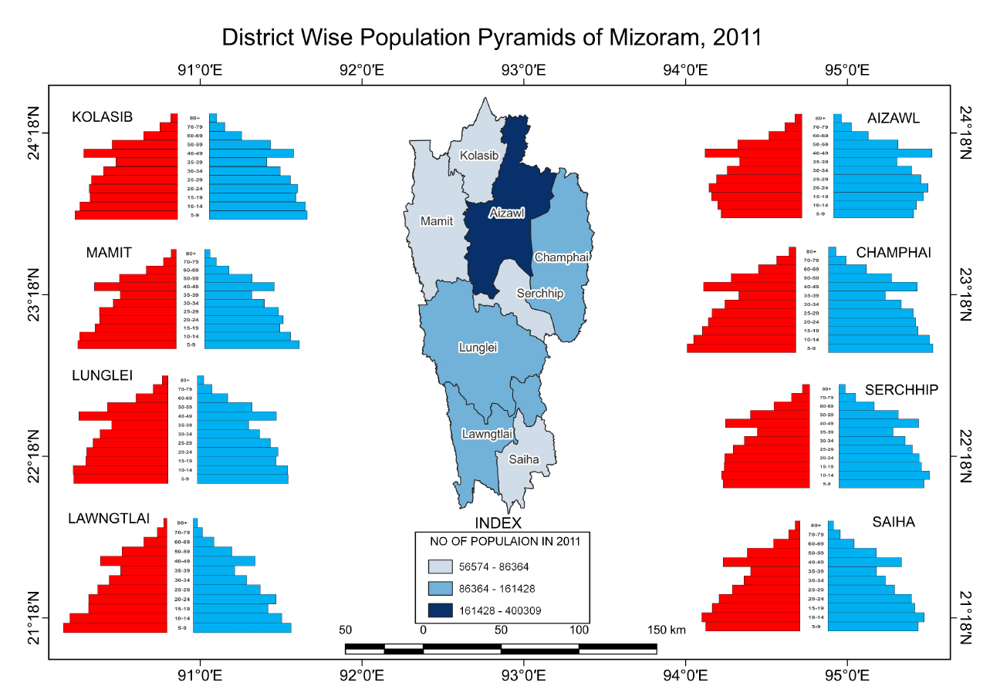

GIS-based choropleth and buffer analysis • Census 2011 • QGIS
This project explores the spatial distribution of population and urban influence zones across Mizoram. Using GIS-based cartographic methods, it analyses population clusters and their relationship to transport corridors and urban hubs, revealing a pronounced concentration of settlement along road networks and around the two dominant urban centres of Aizawl and Lunglei.
The map shows district-level population density across Mizoram with graduated colour symbology, overlaid with urban influence buffers around Aizawl and Lunglei and major transport corridors.

Population distribution in Mizoram • District-level choropleth • Urban influence buffers • Census 2011 • QGIS
Highest population densities are concentrated along major transport corridors, particularly the NH-54 axis connecting Aizawl to Lunglei. Settlement patterns closely follow road accessibility, confirming the role of infrastructure in driving population distribution across the hilly terrain.
Aizawl and Lunglei act as dominant urban centres with wide-reaching influence zones that extend across multiple adjacent districts. These two hubs collectively account for a disproportionate share of the state's total population and service infrastructure.
Remote districts in the eastern part of Mizoram, particularly Lawngtlai and Siaha, remain among the most sparsely populated in the state. Their limited road connectivity and distance from both urban centres are the primary drivers of this settlement gap.
The rugged topography of Mizoram acts as a persistent constraint on population dispersal. Elevated ridgelines and steep valley sides confine dense settlement to valley floors and ridge-top towns, creating a strongly linear settlement pattern across the state.
The study reveals a pronounced spatial imbalance in population settlement across Mizoram. The concentration of population along transport corridors and around the two primary urban centres of Aizawl and Lunglei reflects both the influence of road infrastructure and the constraints imposed by the state's hilly terrain.
The eastern districts show a clear planning gap, with limited urban influence and sparse population coverage pointing to a need for targeted infrastructure investment and more equitable development planning across the state.